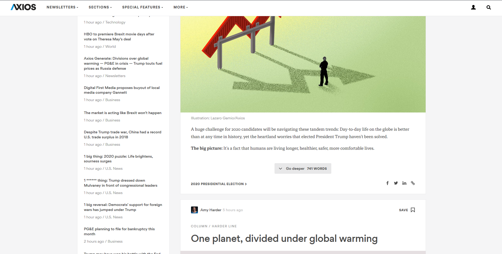

My website is a website focusing on sustainable living and all things environmental this includes articles, business, lifestyle and tech. The type of structure I chose was a website split into sections where the cover story and text would take centre stage.
One of the three things that inspired me when making this website was logic magazine (https://logicmag.io/) because of their easy to read site for users and their clean design (not too much animation images) so the user can focus on the article. Another inspiration I had was from the new your times and their year in visual graphics sections where they use parallax scrolling and other methods to convey an article to them(https://www.nytimes.com/interactive/2017/12/21/us/2017-year-in-graphics.html). The third website that inspired me was axios which dynamicly inserts articles into the webpage.
1st way is by being able to toggle the size of the font for people who are visually impaired 2nd way is by being able to change the contrast of the article to a black background and yellow text for the visually impaired. 3rd is by using title tags for images so electronic readers can read what is going on in the image.
The use of Javascript went well especially with the use of J-query because it saved me a lot of time when manipulating the Dom. The HTML went well because I was constant validating my code and it made HTML standard.
I could of improved on the use of flexboxes and grids and added more animation for example a carousel for the home page.
[1] https://jquery.com/, 'JQuery', 2018. [Online]. Available: https://jquery.com/[Accessed: 5-January-2018].
[2]https://www.w3schools.com/,’W3’,2016[Online].Avaliable:https://www.w3schools.com/ [Accessed: 20-sep-2016].
http://igor.gold.ac.uk/~hkara001/webdev/index.html
Mock up Wire Frames Site Map 